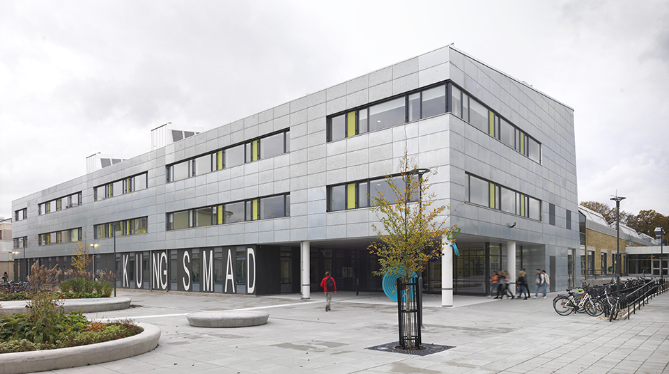

Kungsmad
Kungsmad är en gymnasieskola i Växjö. Skolan har tio olika program. De olika programmen är: bygg-och anläggningsprogrammet, estetiska programmet, fordonsprogrammet, handel- och administrationsprogrammet, hantverksprogrammet, hotell- och turistprogrammet, industriprogrammet, restaurang- och livsmedelsprogrammet, och samhällsvetenskapliga programmet.
